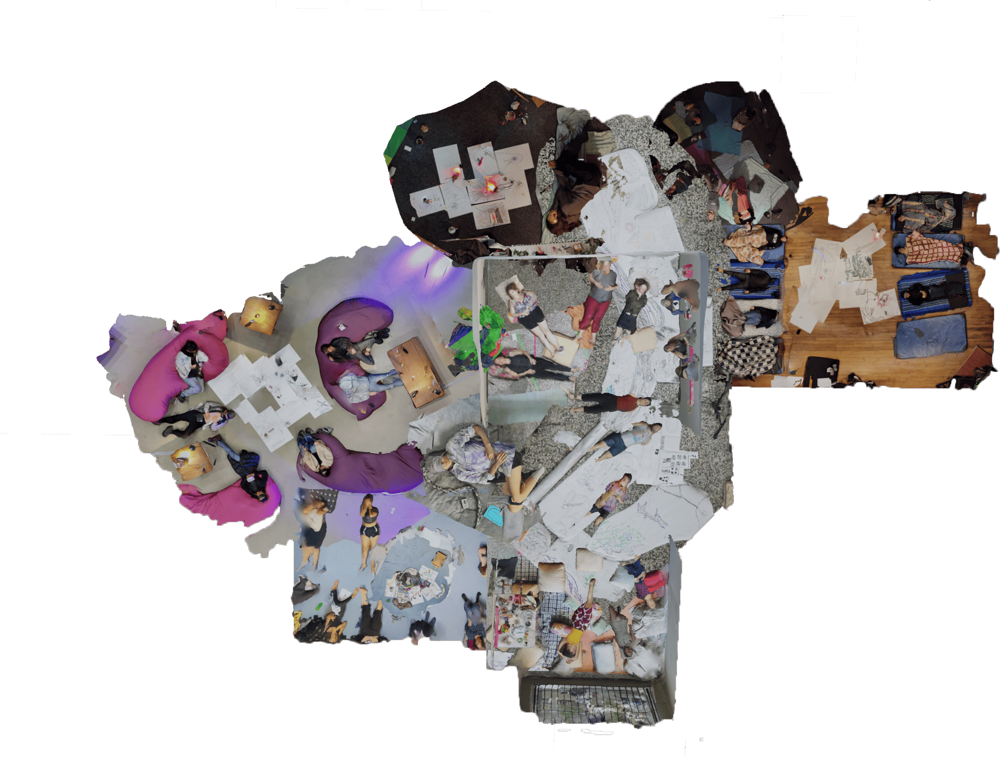

Siestaria

Archive ⎯ ORF Sound - Kunst zum hören, AT - Deutschlandfunk Kultur, DE - Worm, Rotterdam, NL - Errant Bodies, Berlin, DE - Bauhaus-Weimar, DE - CASo Buenos Aires, AR - Festival Tsonami, Valparaíso, CL - CML-FHNW Basel, CH - Haus der Kulturen der Welt, DE - Synthlibrary Prague, CZ - Lafi eV Berlin, DE - LAR, Buenos Aires, AR